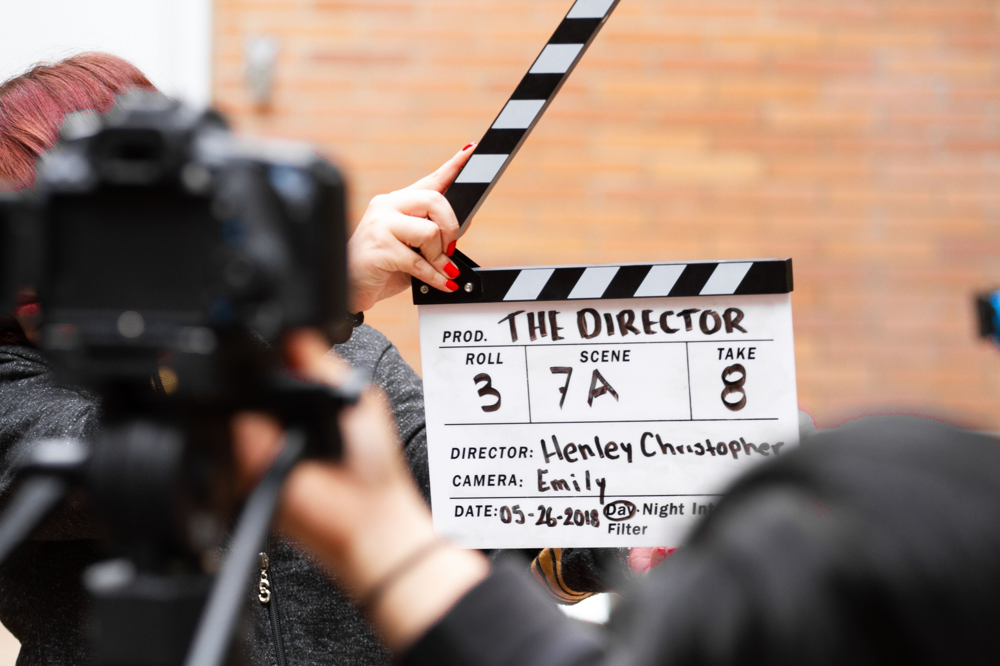
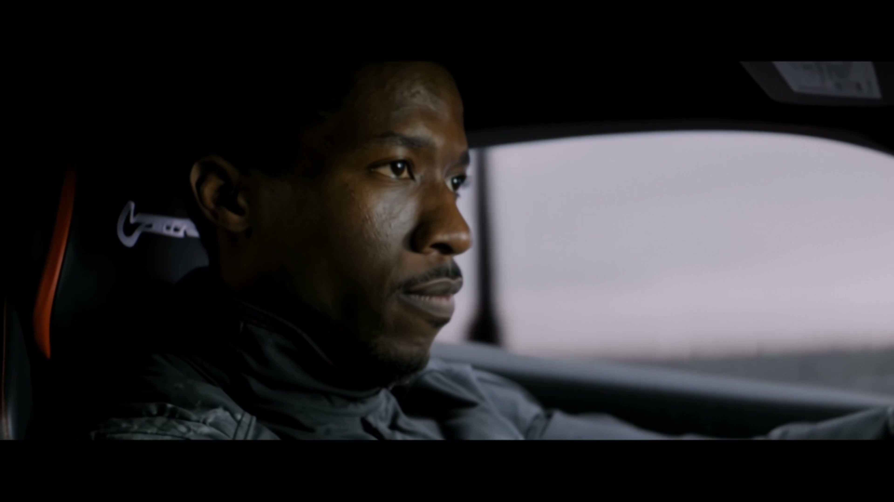
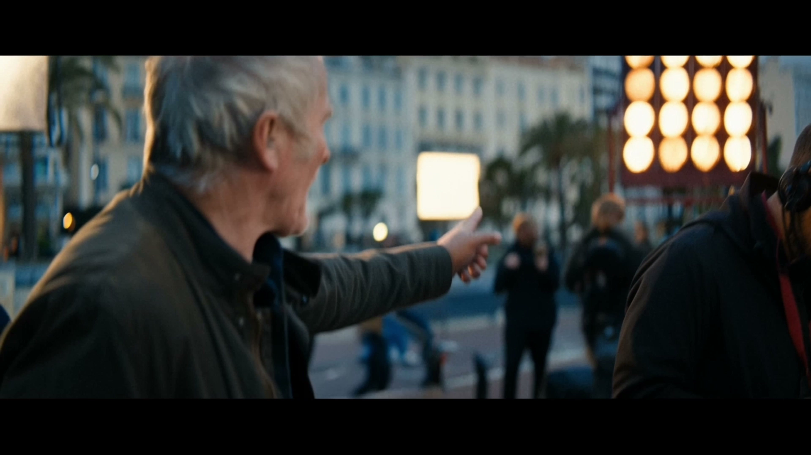
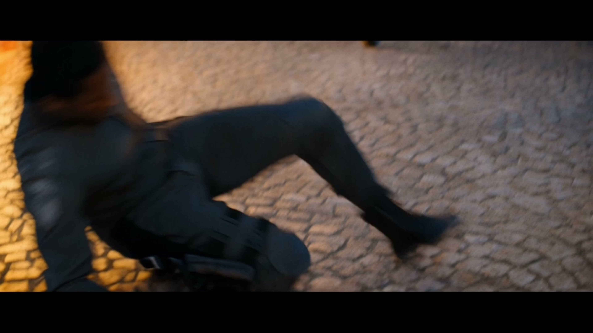
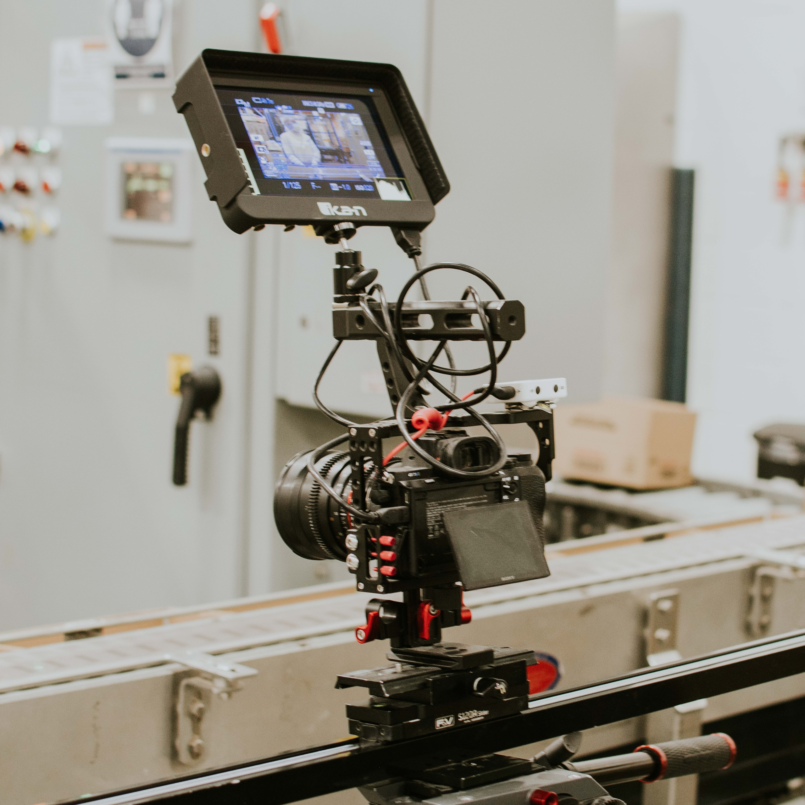
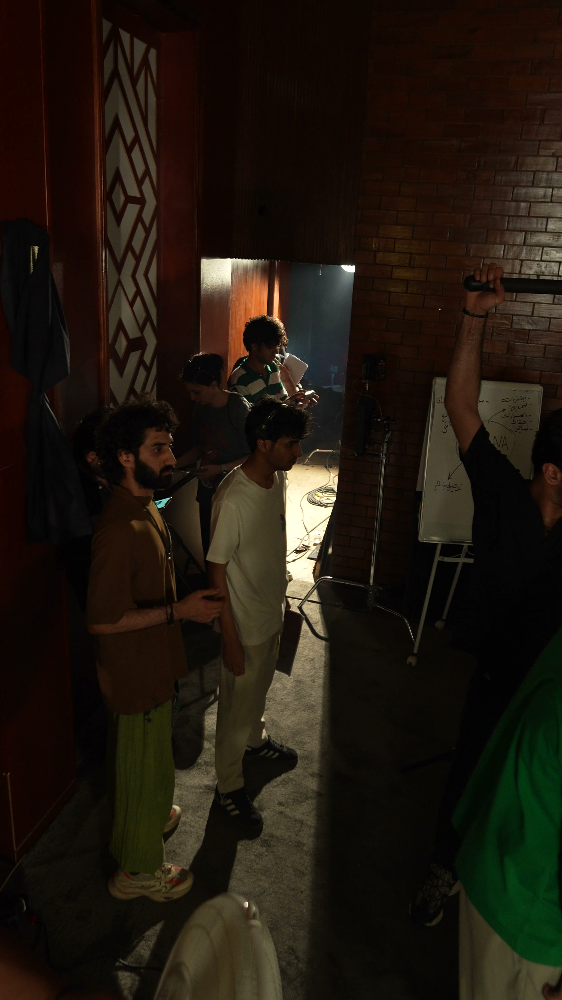

Has the AI Video Throne Changed Hands? Hands-on with Kling 4.0: How Does It Dethrone Yesterday’s Legends and Become the God of Visual Productivity in 2026?
From single shots to commercial delivery: examining image quality alongside production pipelines.

Throughout the evolution of generative AI, we have witnessed countless "industry legends" that peaked at launch only to prove practically useless in real-world application.
Over the past year or two, certain top-tier overseas models and industry benchmarks were repeatedly hailed as icons by capital markets and public opinion, driven by a handful of carefully curated official demos. Yet, when film crews, advertising directors, and cross-border e-commerce sellers actually deployed them in real commercial projects, they faced a harsh reality: fragmented clips that cut off after five seconds; a "blind box" experience where characters' facial features melted after just a few steps; brand products becoming unrecognizable at the slightest provocation... When faced with the rigorous demands of industrial-grade commercial delivery, those hyped-up "masterpieces" were often shattered by reality during actual production workflows.
That is, until Kuaishou’s Kling officially unveiled its new flagship—Kling 4.0 (alongside the cutting-edge Kling 4.0 Flash).
If previous AI video tools were merely playing a superficial game focused on "single-frame image quality," the arrival of Kling 4.0 represents an all-out, "dimensional-shift" strike against the entire industry—wielding an "all-powerful heavy weapon" custom-built for modern audiovisual industrial pipelines. When a model can generate a 30-second native narrative in a single pass, allow for the arbitrary placement of 10 keyframe nodes along the timeline, and firmly lock 15 multimodal assets into the frame, the once-invincible titans of the industry are finally being toppled from their pedestals.
Let’s first look at how filming tasks are organized on a real-world set. The relationship between cameras, personnel, and workspace offers an intuitive reference for understanding commercial production workflows.
I. Ending the Era of "5-Second Clips": Native 30-Second Generation + 10 Keyframes Shatters the Industry Ceiling
Historically, the most criticized weaknesses of major video models have been their short duration and lack of control.
The vast majority of competing products on the market are strictly limited to generating clips between 4 and 10 seconds long. To tell even a basic story, creators are forced to repeatedly extend, expand, and stitch together footage. Each act of stitching is akin to a high-risk genetic mutation: clothing colors shift, background lighting changes abruptly, and characters suddenly sport entirely different faces.
Kling 4.0 delivers a powerful blow directly to the industry's most painful sore spot:
- Native 30-second continuous shots: This is not "fake" long-form video created through frame interpolation; it involves executing continuous camera movement and cause-and-effect storytelling for a full half-minute within a consistent semantic and physical space. From pushing open a door and looking around to sitting down and raising a glass, the transfer of kinetic energy in the character's movements is seamless and natural—completely eliminating the disjointed feel of pieced-together fragments.
- Precise guidance across the entire timeline with up to 10 keyframes (Keyframes): Traditional models give you, at most, a first frame and a last frame, leaving the AI to run freely in between. Kling 4.0 lets creators precisely anchor up to 10 key visual points at different seconds on the timeline, like a real film director: an entrance at 0 seconds, a push-in at 8 seconds, an action at 16 seconds, a turning point at 24 seconds, and a freeze-frame at 30 seconds.
While competing products still rely on creators leaving results to chance—like "drawing cards" in a game—Kling 4.0 has transformed storyboards into concrete, actionable production commands.
The car and character demonstrations below allow you to observe how multi-subject scenes are organized when compared against the original source material.



II. Solving "AI Face Distortion and Prop Inconsistency": The Absolute Power of 15 Sets of Omni-Modal Assets
In commercial video production, the one thing clients find intolerable is hearing: "That’s just how AI works; the appearance and the product will look slightly different every time."
Traditional text-to-video models struggle to handle high-value commercial projects because they lack the ability to maintain consistency under multiple constraints. If you preserve the model's face, the garment's cut loses its shape; if you specify a particular beverage can, the background might suddenly shift into "magical realism."
Kling 4.0’s "Omni Reference" system raises the industry standard for asset handling to an astonishing new level:
- Processing 15 sets of composite assets in a single task: It supports the simultaneous loading of up to 10 high-fidelity images, 5 video clips (totaling 30 seconds), and 7 distinct subjects.
- Modular constraints and spatial transfer: You can lock in complex 3D camera paths using a video of a plain 3D model, transfer body rhythms from a live-action clip, anchor an actor's facial features and bone structure using multiple close-ups, and—with a single product image—precisely lock onto every seam and highlight on the merchandise.
This engineering capability to "force-lock" diverse assets into the same space-time continuum is something that the vast majority of competing products—still stuck at the level of single-image prompting—simply cannot match.

Separately recording model outputs and post-production edits; commercial delivery requires clearly defined asset boundaries.
III. A Devastating Leap in Integrated Audiovisual Production: 10-bit HDR and a Dual-Channel Soundstage
No matter how beautiful the visuals, once placed on professional color-grading consoles and sound systems, many AI videos claiming "cinematic quality" reveal their flaws: blown-out highlights, clumpy noise in the shadows, and thin, synthesized audio that gives the entire piece a cheap, artificial feel.
The upgrades Kling 4.0 has made to its underlying audiovisual parameters are driven entirely by standards benchmarking against professional digital cinema cameras:
- Professional-grade 10-bit HDR output: Delivers smooth dynamic range across both 1080p and native 4K resolutions. In extreme scenarios—such as high-contrast backlighting or neon lights on a wet, rainy night—it ensures highlights don't blow out and shadows remain clean, offering professional colorists immense creative latitude for post-production grading.
- Native 21:9 widescreen format: Paired with anti-distortion algorithms specifically optimized for high-speed tracking and sweeping 360-degree camera movements, the resulting footage naturally possesses a Hollywood-grade cinematic aesthetic.
- Dual-channel stereo audio and micro-expression/lip-sync alignment: This goes beyond merely ditching mono audio; it achieves seamless synchronization between breathing sounds, lip and teeth movements, and the depth of the soundstage. From American and British English to Cantonese and Sichuanese, character performances finally feel truly lifelike, eliminating the awkward, "wooden puppet" disconnect seen in the past.
Real-world demonstrations using professional cinematography gear bring the actual production context—beyond just what the model generates—back into focus.
IV. Why is it that, while wielding the same powerful tool, some users dominate effortlessly while others are still just guessing?
The emergence of any industrial-grade powerhouse tool inevitably triggers a stark divide among creators.
While the foundation of Kling 4.0 is incredibly powerful—supporting ultra-long semantic analysis of up to 8,000 tokens—it also places unprecedented demands on a creator's "directorial intuition." If creators still rely on outdated tags like "8k resolution, cinematic, masterpiece" and hope for the best, it is akin to driving a supersonic fighter jet to plow a muddy field.
How can complex commercial requirements be precisely broken down into the 10 keyframe instructions required by Kling 4.0’s timeline specifications? How can one accurately employ cinematography terminology to push the 4.0 model’s camera stability to its absolute limit?
The core competitive advantage of commercial production teams:
The reason leading, high-output studios can consistently deliver dozens of high-conversion advertisements every day with Kling 4.0 often lies not in blindly trying things manually, but in having a professional hub for the entire workflow. Many leading creators currently pair their projects directly with the Kling 4.0 Commercial Storyboard Orchestration and Industrial-Grade Prompt Engine. It can reconstruct a casually written plot idea or product selling point, in seconds, into a professional storyboard instruction set that follows the timing rules for 10 keyframes. It automatically aligns shot sizes, camera movement speeds and multimodal asset reference numbers, reducing a tuning process that previously took a whole day to just a few minutes and enabling ordinary users to instantly produce master-level results.

V. Conclusion: Legends aren't built on slogans; only tangible delivery defines true leadership.
In the rapidly evolving technological landscape of 2026, any hype detached from actual productivity will inevitably fade with time. While past industry legends offered the world a glimpse of the tip of the AI video iceberg, Kuaishou’s Kling 4.0 has delivered a dominant performance on the journey to bring this technology to industrial-scale production lines, cross-border e-commerce, and cinematic concept design—anchored by solid native 30-second generation, precise control via 10 keyframes, and the coordination of 15 asset groups.
It is not merely following in the footsteps of predecessors but rewriting the rules of the global AI video industry. For content creators and commercial brands alike, this represents more than just a tool update; it is a clear signal of the transition between eras of productivity. As the throne changes hands, only those who embrace the new industrial standards first will capture the traffic and commercial dividends of the coming era.
If you are also preparing a production plan for your next commercial video, you can use the shot ideas and prompt reference portal to continue finding expressions suited to your project, then verify them through the actual generation interface.